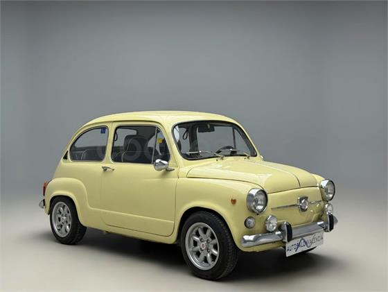

Conoce nuestra newsletter
El garaje clásico es una newsletter sobre vehículos clásicos. En nuestros boletines compartimos historias, curiosidades y datos sobre los coches que marcaron una época, especialmente los modelos populares de muchas familias.
En la página de información puedes ver ejemplos de los temas que tratamos. Si quieres saber más sobre la newsletter, escríbenos mediante el formulario de contacto.
